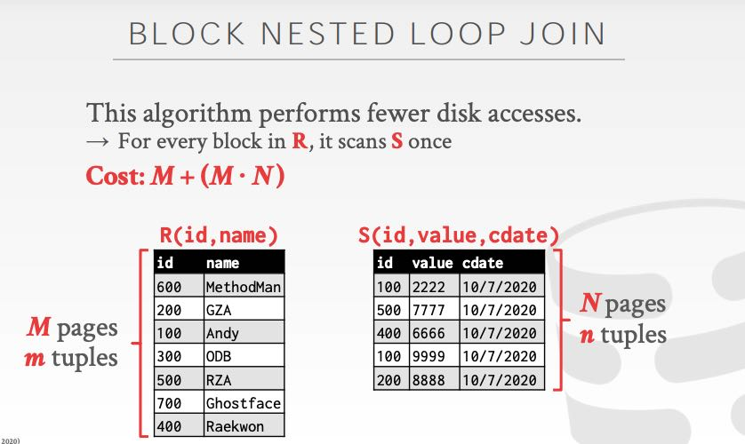
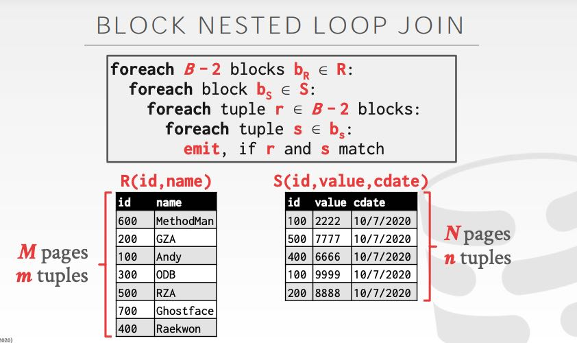

CMU DB Sort+Agg+Join
通常外排都会使用多路排序，我们首先计算需要多少趟(phase):
- 假设有B个buffer pages, N个文件需要进行归并排序
- 首先对每个文件进行排序，这是一趟
- 然后使用K-merge sort. 可以同时对B-1路进行归并排序，剩下一个Buffer page用于output
- 这样算下来会有ceil(log(N) - log(B-1))趟
- 因此总共可以认为有 log(B-1)(N) + 1趟
每趟都需要对N个文件input/output, 所以IO大小就是2*N*(# of phases)
做Agg的话有两种办法：Sort和Hash. Sort这个好理解，搞过MapReduce里面Reduce阶段都知道。Hash可以对key进行分桶，然后对每个bucket分别做agg. 至于对每个bucket做agg的话，又还是回到sort或者是hash了，这个过程可以持续拆分下去。
Join只以inner equijoin为例，其他的join都可以在这个上面进行扩展。join过程中的输出可以是data, 也可以是record id. 如果使用record id的话，那么就需要回表。可能中间计算过程传输会减少，但也可能因为回表次数太多，造成cost又上来了。课程里面的说法是，对于vertica这样的OLAP系统，最开始是record id, 但是后来切换到了data性能更好。
Join算法分析中有下面几个变量：
- M pages in table R(outer table), m tuples
- N pages in table S(inner table), n tuples
- B available buffer pages
经典算法有下面几种：
- NLJ(Nested Loop Join). 简单的循环匹配 可以细分为BNL(Block)和INL(Index)
- SMJ(Sort-Merge Join) 分别对两个表做sort然后merge join
- HJ(Hash Join) Build+Probe
Blocked Nested Loop Join 工作方式如下，时间复杂度是 M + MN. 如果可用的Buffer pages更多的话，那么可以做到M+(M/(B-2) * N). Index Nested Loop Join 则是遍历outer table, 然后使用index去query inner table. 时间复杂度是M+(m*C) C是查询index的时间
 
SMJ 时间复杂度分为两个部分，Sort的话上面有K-Way merge sort的时间复杂度，如果table上有按照join key的索引，那么这个sort部分就可以省去。Merge就是M+N.
HJ 时间复杂度分为两个部分：Build + Probe. Build是将outer table 按照某个hash function生成hash table. 然后Probe阶段就是遍历inner table去hash table里面查询。至于hash table里面存放data还是record id则根据情况，如果join selectivity比较低的话，那么使用record id则更加划算。另外就是在build阶段还可以生成Bloom filter, 帮助probe阶段。这种bloom filter可以理解为某种sideways information passing.
HJ的cost analysis我有点没有看懂。上面的HJ要求hash table是in memory的话，如果没有办法in memory的话，那么可以分别对inner和outer table做partition，使用相同的hash function，然后分别对partition做join. 每个partition上面的join可以继续拆分，直到partition可以fit in memory为止，这是个递归的过程。如果不考虑递归的话，partition phase时间复杂度是2*(M+N)(input + output), Probe Phase因为完全fit in memory使用NLJ的话可以做到M+N. 所以总的cosst是 3*(M+N).